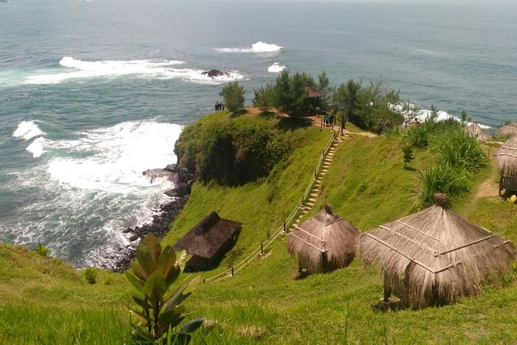
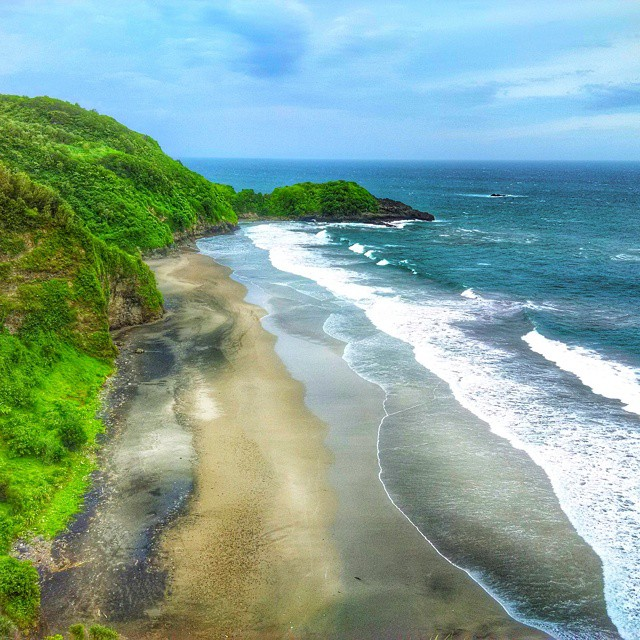

Pantai Menganti

Pantai ini merupakan salah satu pantai terindah di Jawa Tengah. Pasir pantainya yang berwarna putih serta terdapat panorama
perbukitan juga tebing karst yang indah. Pantai Menganti mempunyai rute yang berkelok-kelok, namun semuanya akan terbayarkan
dengan pemandangan yang segar dan asri. Pantai Menganti berlokasi di Desa Karangduwur, Kec. Ayah, Kab. Kebumen, Jawa Tengah
yang berjarak 40km dari pusat Kota Kebumen.
Pantai Surumanis

Pantai Surumanis Kebumen adalah pantai dengan pasir pantai berwarna hitam kecoklatan dengan batu karang besar disekelilingnya.
Pantai ini berada pada daerah tersembunyi dan harus melewati Pantai Pecaron terlebih dahulu untuk menjangkaunya. Pantai ini
memiliki pemandangan yang eksotik dengan batu karang yang indah mengelilinginya. Fasilitas demi fasilitas juga sudah dikembangkan
di Pantai ini. Beberapa spot foto sudah disediakan oleh pihak pengelola kepada pengunjung. Pantai Surumanis berlokasi di Desa Pasir,
Kec. Ayah, Kab. Kebumen, Jawa Tengah.
Goa Jatijajar

Goa Jatijajar adalah sebuah situs geologi yang terbentuk dari proses alamiah, yang terletak di Kabupaten Kebumen, Jawa Tengah.
Goa yang keseluruhannya terbentuk dari kapur, ini memiliki panjang 250 meter, lebar rata-rata 15 meter, dan tinggi rata-rata 12 meter.
Lokasi goa ini berada 50 meter di atas permukaan laut.Goa Jatijajar berlokasi di Jl. Jatijajar, Palamarta, Jatijajar, Kec. Ayah,
Kab. Kebumen, Jawa Tengah.
Goa Jatijajar juga tidak lepas dari legenda Raden Kamandaka – Lutung Kasarung. Cerita ini memang khas Jawa Barat karena berasal dari
Kerajaan Padjajaran. Meski demikian, legenda itu ada di Goa Jatijajar karena pada abad ke-14 goa ini silam berada dalam wilayah Kadipaten
Pasir Luhur yang masuk kekuasaan Kerajaan Padjajaran. Selain dari segi wilayahnya, konon dahulu Raden Kamadaka atau Lutung Kasarung pernah
bertapa di dalam goa ini.
Bukit Banda

Bukit Banda, mungkin nama itu belum familiar dengan wisata lain seperti Bukit Pentulu Indah . Bukit banda menawarkan pemandangan kabut awan
indah, dengan gardu-gardu pandang diketinggian. Di pagi hari, kabut tebal yang menyelimuti kawasan ini menawarkan ppemandangan cantik nan
menyejukan. Saat matahari menjelang terbit, samar-samar semburat jingga kekuningan muncul dari balik awan. menurut mereka yang disana Bukit
Banda layaknya negeri diatas awan. Bukit Banda berlokasi di desa Wadasmalang, Kec. Karangsambung, Kab. Kebumen Jawa Tengah.
Benteng Van der Wijck

Sebelum menjadi sebuah benteng, di tempat berdirinya Benteng Cochius atau Benteng van Der Wijck merupakan sebuah kantor Vereenigde Oostindische
Compagnie (VOC) yang ada di Gombong. Bangunan kantor tersebut kemudian diubah menjadi benteng pada tahun 1818 sesuai dengan informasi yang ada
di dalam benteng. Pembangunan dilakukan di masa pemerintahan Gubernur Jenderal Godert Alexander Gerard Philip baron van der Capellen. Dalam sumber
lain dinyatakan jika benteng ini mulai dibangun pada tahun 1844. Benteng dibangun oleh Frans David Cochius dan selesai dibangun pada tahun 1848.
Benteng ini kemudian diberi nama Benteng Cochius. Frans David Sochius merupakan perwira tentara Belanda yang juga ahli tentang bangunan benteng.
Perang Jawa atau Perang Diponegoro yang meletus pada tahun 1825-1830 cukup merepotkan Hindia-Belanda. Perang yang dipimpin oleh Pangeran Diponegoro
tersebut dapat dipatahkan oleh pemerintah Hindia Belanda melalui sebuah strategi yang disebut dengan Benteng Stelsel. Strategi ini diciptakan oleh
Jenderal de Kock yang mulai digunakan pada tahun 1827. Dalam strategi ini, Belanda membangun benteng di beberapa wilayah di Jawa Tengah, Yogyakarta,
dan Jawa Timur untuk mempersempit ruang gerak gerilya yang dilakukan oleh Pangeran Diponegoro beserta pasukannya. Kantor dagang bekas Vereenigde
Oostindische Compagnie (VOC) yang ada di Gombong tersebut kemudian digunakan sebagai markas tentara untuk mendukung strategi Benteng Stelsel.
Benteng ini dibangun oleh militer Belanda dengan mempekerjakan kurang lebih 1400 orang yang berasal dari Banyumas dan Bagelen. Pada tahun 1856,
Benteng Cochius difungsikan menjadi sekolah militer (Pupillenschool) atau sekolah taruna untuk orang-orang Eropa. Benteng berganti nama menjadi Benteng
Van Der Wijck sebagai hadiah atas jasanya di bidang kemiliteran Belanda.Di masa kependudukan Jepang, Benteng Van Der Wijck masih difungsikan sebagai
tempat pelatihan tentara. Fungsi ini masih bertahan hingga Indonesia merdeka. Benteng digunakan sebagai barak ABRI hingga tahun 1980. Setelah itu benteng
diubah fungsinya menjadi tempat tinggal anggota TNI Angkatan Darat hingga tahun 2000.
Benteng Van der Wijck berlokasi di Sidayutengah, Sidayu, Kec. Gombong, Kabupaten Kebumen, Jawa Tengah
Bukit Jerit

Bukit Jerit adalah destinasi wisata baru di Kebumen, yang terkenal dengan pemandangan laut dari Pantai Karang Bolong yang bisa dinikmati oleh pengunjung
dari atas bukit.Bukit Jerit adalah salah satu destinasi wisata di Kota Kebumen yang terlokasi di Kecamatan Ayah, Kebumen. Bukit ini tepatnya terletak di
Dusun Ketanggung, Desa Pasir, Kecamatan Ayah, Kebumen. Wisata ini merupakan wisata yang tergolong baru dan sedang dikembangkan. Bukit Jerit berdekatan dengan
wisata Watu Pawon Petemon dan Pantai Watu Bale.Tempat wisata ini terkenal dengan pemandangan laut di atas bukit yang biasa dikunjungi oleh pengunjung untuk
menikmati keindahan samudra.
Waktu paling baik untuk mengunjungi Bukit Jerit ini adalah sore hari. Karena biasan sinar matahari terbenam akan menambah eksotisme pemandangan tebing dan
lautan disana. Namun jika ingin datang di pagi hari, lebih baik pagi-pagi sekali saat matahari baru terbit. Pemandangannya akan sangat indah karena pantulan
cahaya yang dihasilkan dari air laut Samudera Hindia. Akses jalan menuju Bukit Jerit tergolong masih belum sempurna, namun penduduk sekitar masih terus
mengerjakan perbaikan untuk pariwisata tersebut. Di sini pun tidak hanya terdapat bukit yang bisa dijadikan tempat duduk oleh pengunjung saat menikmati pemandangan
laut, namun juga ada beberapa spot foto.
Jika anda merasa tidak sanggup untuk trekking, anda bisa menyewa jasa ojek yang tersedia di pos utama kawasan ini. Rasa lelah akan terbayar ketika anda sudah
melihat hamparan birunya laut yang dipadu dengan hijaunya bukit yang anda pijak. Suara deburan ombak yang membuat relaksasi di otak serta hempasan angin yang membasuh
wajah semakin menambah sensasi relaksasi di tempat ini.
Curug Plumbon

Curug Plumbon adalah tempat wisata yang ramai dengan wisatawan pada hari biasa maupun hari liburan. Tempat ini sangat indah dan bisa memberikan sensasi yang berbeda
dengan aktivitas kita sehari hari. Curug Plumbon memiliki pesona keindahan yang sangat menarik untuk dikunjungi.
Curug Kali memiliki dua tingkatan dengan total ketinggian sekira 15 meter. Meski tak terlalu tinggi, Curug Kali memiliki formasi air terjun yang indah. Air yang
jernih dan segar tersebut mengucur deras diatas batuan sedimen yang nampak bertumpuk-tumpuk. Curug Kali berada di aliran Sungai Grigak. Sungai ini sangat unik karena
dasar sungai bukan tanah melainkan beralaskan batu dan memiliki formasi batuan yang juga unik.Diantara jeda undakan curug terbentuk sebuah kolam dengan warna kehijauan
yang luas dan dalam sehingga bisa digunakan untuk berenang.Suasana alami masih sangat terasa di Curug Kali. Kebun-kebun warga mengapit curug ini dengan ohon-pohon yang
hijau dan rindang. Udara segar wilayah pegunungan terasa segar Sangat di sayangkan jika anda berada di kota Kebumen tidak mengunjungi Wisata Curug Plumbon yang mempunyai
keindahan yang tiada duanya tersebut. Curug Plumbon salah satu tempat wisata yang berada di Desa Plumbon, Kecamatan Karangsambung, Kabupaten Kebumen, Jawa Tengah.